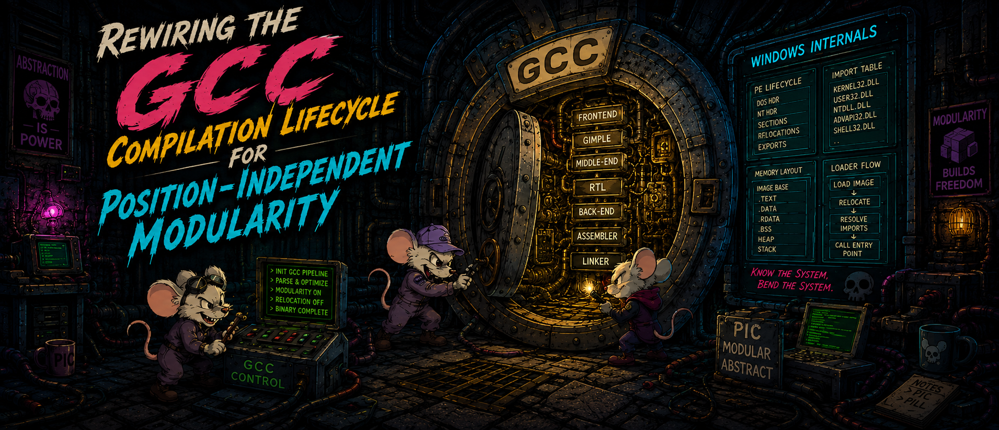
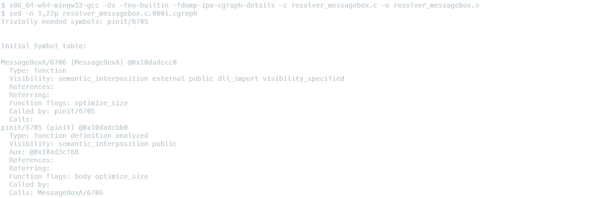
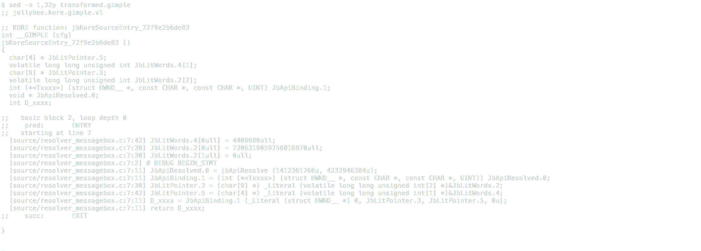
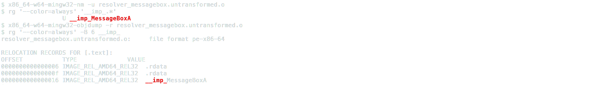
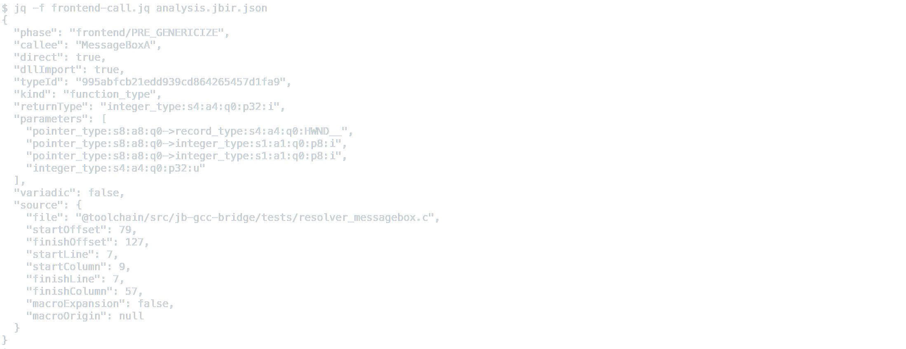
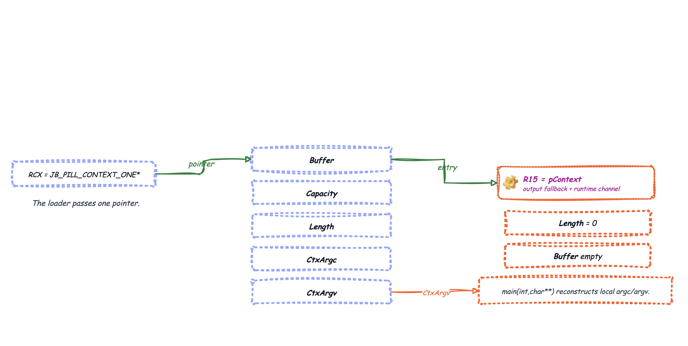

Rewiring the GCC Compilation Lifecycle for Position-Independent Modularity
JellyBee Compiler · Part One

The Wormhole Between C Code and Position-Independent Binary
Over the past year, I have immersed myself in the workings of the MinGW-w64 toolchain and, in particular, its core: GCC. My goal was not merely to verify that a program compiled or that a call to a Windows API worked. I needed to observe and understand every transformation applied to the code: from the moment I cross-compiled an apparently simple Win32 call, such as MessageBoxA, all the way to the syscall boundary and, when the execution path required it, the transition from user mode to ring 0.
In the context of this series, that journey begins with preprocessing and continues through syntactic and semantic analysis, GCC’s intermediate representations, its transformation and optimization passes, assembly generation, COFF object construction, and, finally, the linking process that produces the resulting PE executable.
When GCC is run with the diagnostic configuration used during this research, even a minimal MessageBoxA-based example can generate more than 340 dumps and intermediate artifacts. These files make it possible to inspect the state of the program at different points in the pipeline: syntax trees, GIMPLE, RTL, optimization decisions, symbol references, sections, calls, and other internal transformations. Not every dump represents an independent semantic transformation, but taken together, they provide an exceptionally detailed view of how an intention written in C ultimately becomes executable bytes.
MessageBoxA unit and inspection of its intermediate artifacts.Before developing the compiler driver I use today, JBKORE, I built an initial experiment called Rajpilator. It collected selected compiler dumps, serialized the relevant information, and used that state to drive transformations intended to converge into a single .text section under a strict position-independent code contract. Rajpilator worked reasonably well for bounded units of functionality, such as service enumeration or specific token-impersonation operations, but its heuristic architecture became difficult to maintain with complete Kerberoasting implementations or larger call, data, and dependency graphs. Each increase in complexity introduced more exceptions and synchronization requirements, making it harder to prevent a later phase from invalidating guarantees established earlier in the pipeline.
Despite those limitations, Rajpilator produced several results that became the foundation of the work that followed. During its development, I built a header layer designed around complete artifact independence, maintained strict control over final binary size, introduced custom intrinsics, developed a sufficiently complete mini-CRT, and experimented with four different API-resolution architectures.
These results, together with the architectural limits of Rajpilator, led to JBKORE. Unlike the original prototype, JBKORE works alongside GCC from the earliest stages of compilation, retaining the context required to apply transformations deterministically instead of reconstructing compiler decisions after they have occurred. This first installment in a three-part series explains how GCC and JellyBee’s compilation components form a two-layer pipeline for producing capable PIC binaries from C.
Before proceeding, I will assume that the reader understands the fundamentals of developing position-independent code. Useful introductions include Brute Ratel’s Executing Position Independent Shellcode from Object Files in Memory and the video included in Tradecraft Garden: Tilling the Soil. Related approaches include Crystal Palace, which operates after compilation primarily during linking, and Stardust, which combines a development template with linker scripts to consolidate an artifact into a single .text section.
Throughout this first article, we will follow how C code becomes intermediate representations, sections, symbols, references, and finally bytes. The result is valid only if it preserves the semantics of the original source and satisfies our self-contained PIC contract: no conventional imports, no unresolved relocations, and no data dependencies outside the module itself. We also need enough observability to trace every relevant compiler decision into the COFF object and final binary.
The GCC Compilation Lifecycle
A call to MessageBoxA looks simple: one function, two strings, and four arguments. However, the Windows headers have already defined its signature, types, calling convention, and import attributes. During linking, the reference is ultimately associated with the corresponding import library.
Before the call produces the expected window, MessageBoxA passes through a chain of decisions that completely changes its form. We will follow that journey from the beginning: the preprocessor opens windows.h, expands its macros, and presents the frontend with the effective declaration. At that point, GCC no longer sees a simple word written by the developer, it sees a direct callee, a typed signature, a calling convention, and a dllimport attribute that ties the operation to user32.dll.

This first journey establishes our baseline. The C Preprocessor (CPP) emits a preprocessed translation unit, and the frontend builds its types and trees. The middle end then operates on GIMPLE, Interprocedural Analysis (IPA), and Static Single Assignment (SSA). Finally, the backend lowers that representation to Register Transfer Language (RTL), assembly, and a COFF object. In an ordinary build, imports and relocations are expected parts of the contract because the linker and loader can still resolve them at the end.
The representation then moves from the frontend trees into GIMPLE. The call, the "JellyBee" and "PIC" literals, branches, and values become part of a Control-Flow Graph (CFG) on which GCC builds SSA, dominance, and use relationships. This is precisely where KORE must intervene: we need to replace the import with typed resolution, materialize the literals in automatic storage, and preserve the signature obtained from the headers without trying to reconstruct it from text.

The bridge does not replace GCC's compilation flow, it integrates with it and coordinates two executions of the same compiler. The first observes the frontend and projects jellybee.jbir.two. From that information, the driver builds the context, API, entry, and Matrix contracts. The second execution returns those contracts to the pass manager: jb-context transforms signatures and propagates JB_CONTEXT * through IPA, while jb-semantic rewrites imports and literals in GIMPLE. Once these operations are complete, GCC can continue with its normal optimization and backend stages.
When transformation is complete, the backend lowers GIMPLE to instructions, registers, and COFF sections. For our purposes, however, the result is acceptable only if .text contains everything the module needs: there can be no unresolved __imp_MessageBoxA symbol, no relocation to external data, and no accidentally inherited static section. Compilation therefore stops being a simple conversion from C to machine code and becomes proof that the original semantics survived every representation change. To perform this verification without losing type information, the transformation must happen inside GCC.
The Transformation We Need Happens Inside GCC
To avoid reconstructing the language after preprocessing, JELLYBEE-PIC-PILL-KORE enters the compiler directly as a versioned plugin. This lets us work while GCC still holds its trees, types, and control-flow graph in memory. The bridge projects only the stable subset JellyBee needs into jellybee.jbir.two, allowing the driver to reason about semantic entities without turning GCC's internal dumps into an accidental interface.
The translation unit passes through two coordinated executions of the same compiler, pinned by its fingerprint. The first gives us the typed map needed to construct the API, context, entry, and Matrix contracts. That information returns to the bridge during the second execution, where mutations are applied to IPA and GIMPLE before GCC optimizes and emits the COFF object. The following diagram shows how both executions relate to the driver and final verification.

First, at the PRE_GENERICIZE event, we capture declarations, source ranges, attributes, calls, and literals while the frontend still knows their origin. After visibility, the jb-context IPA pass transforms signatures affected by global state and propagates context through the call graph. Once the CFG exists, jb-semantic replaces imports, classifies Matrix values, and materializes automatic literals. Finally, FINISH_UNIT closes the post-pass projection and publishes structured diagnostics. To verify that each phase preserves the meaning required by the next, we will examine the IPA, GIMPLE, and COFF.
IPA: Decisions Across Functions
IPA is GCC's interprocedural analysis layer, where we can observe relationships that no isolated function could resolve. We need to know which functions reach an API, which require context, how that requirement propagates, and which recursive components must change signature as a single unit. KORE therefore inserts jb-context before local body transformations.

pinit → MessageBoxA edge in GCC's cgraph.GIMPLE: Typed Operations Inside the CFG
Once we understand the relationships between functions, we move to GIMPLE, GCC's simplified intermediate representation. Here, the body appears as typed operations arranged in basic blocks, and GCC builds SSA, dominance, and the CFG on top of that form. This allows jb-semantic to insert automatic stores, replace the import with a typed binding, and keep each resolution on the exact control-flow path where it is used. The canonical transformed.gimple artifact shows the result: local literal materialization, a typed MessageBoxA binding, and the final post-bridge call.

MessageBoxA unit.COFF: Observable Sections, Symbols, and Relocations
To complete this journey, we reach COFF, the object format consumed by the linker. The capture shows why we reject the direct pre-KORE build: nm reports U __imp_MessageBoxA, and objdump identifies an IMAGE_REL_AMD64_REL32 relocation from .text.

MessageBoxA Forces Every Layer to Agree
To verify this, we will use minimal code covering three points: identifying the API’s origin, deciding how to store the two strings, and correctly connecting the code entry point to ABI.
#include <windows.h>
int pinit( void )
{
return MessageBoxA( NULL, "JellyBee", "PIC", MB_OK );
}The first thing we obtain from the frontend is the effective callee together with its complete type. The PRE_GENERICIZE projection in analysis.jbir.json records the callee, its direct nature, the dllImport attribute, the source range, and the typeId. This type connects an integer return value, HWND, two character pointers, and an unsigned integer argument, while variadic: false completes the call contract. Next, the catalog built from the import libraries establishes user32.dll as the unique origin. From this association, we obtain the module hash 0x542EEE26 and API hash 0xFC4DA2D0, both enter the flow as immediates and make the dllimport reference unnecessary. The following capture lets us verify both origin and signature before applying the transformation.

MessageBoxA contract projected into JBIR.Once we have this contract, the following GIMPLE output shows how the literals move into automatic storage and how jbApiResolve replaces the imported reference without losing the signature GCC obtained from windows.h.
/* Conventional literals live in automatic storage. */
JbLitWordsJellyBee[0] = 0x656542796C6C654AULL;
JbLitWordsJellyBee[1] = 0x0000000000000000ULL;
JbLitWordsPic[0] = 0x0000000000434950ULL;
/* The binding preserves the signature GCC obtained from windows.h. */
JbApiResolved = jbApiResolve( 0x542EEE26u, 0xFC4DA2D0u );
JbApiMessageBoxA = ( __typeof__( &MessageBoxA ) )JbApiResolved;
return JbApiMessageBoxA( NULL, JbLitJellyBee, JbLitPic, MB_OK );Complete Transformed Translation Unit
The following view brings together the transformed body and the ABI adapter—which the toolchain compiles separately—in a single block. We use it only to read the transformed IR clearly, it should not be interpreted as a second C frontend.
int jbKoreSourceEntry_72f9e2b6de83( void )
{
volatile unsigned long long JbLitWordsJellyBee[2];
volatile unsigned long long JbLitWordsPic[1];
char *JbLitJellyBee;
char *JbLitPic;
void *JbApiResolved;
__typeof__( &MessageBoxA ) JbApiMessageBoxA;
JbLitWordsJellyBee[0] = 0x656542796C6C654AULL;
JbLitWordsJellyBee[1] = 0x0000000000000000ULL;
JbLitWordsPic[0] = 0x0000000000434950ULL;
JbLitJellyBee = ( char * )JbLitWordsJellyBee;
JbLitPic = ( char * )JbLitWordsPic;
JbApiResolved = jbApiResolve( 0x542EEE26u, 0xFC4DA2D0u );
JbApiMessageBoxA =
( __typeof__( &MessageBoxA ) )JbApiResolved;
return JbApiMessageBoxA(
NULL,
JbLitJellyBee,
JbLitPic,
MB_OK );
}
__attribute__( ( used, noinline, section( ".text$pinit" ) ) )
void JB_PILL_CALL pinit( JB_PILL_CONTEXT_ONE *pContext )
{
void *pPreviousContext;
if ( pContext != ( JB_PILL_CONTEXT_ONE * )0
&& pContext->Buffer != ( wchar_t * )0
&& pContext->Capacity > 0u )
{
pContext->Length = 0u;
pContext->Buffer[0] = ( wchar_t )0;
}
__asm__ __volatile__(
"movq %%r15, %0\n\t"
"movq %1, %%r15"
: "=&r" ( pPreviousContext )
: "r" ( pContext )
: "r15", "memory" );
( void )jbKoreSourceEntry_72f9e2b6de83();
__asm__ __volatile__(
"movq %0, %%r15"
:
: "r" ( pPreviousContext )
: "r15", "memory" );
}The delicate part, however, is not simply inserting jbApiResolve, but placing it where its value dominates exactly the uses it replaces. A branch that never calls the API should not pay the resolution cost, just as a loop should not multiply that cost because of a text-based placement decision. KORE solves this by using the dominance information, SSA form, and CFG that GCC has already computed. If an import's origin is not unique, a diagnostic stops the build instead of trying to guess a DLL. Once the call is resolved, the next problem is deciding which literals must remain inside the module and which should leave through Matrix.
Matrix Separates the Message from Its Transport Mechanism
After eliminating static references, we might assume that removing .rdata also removes all recognizable text, but it does not. A string built through automatic stores may still appear.
When the Entire Literal Is the Message
The first case occurs when the entire literal constitutes the message. JB_MTRIX_LOG marks that value as MatrixLiteralWhole, and the bridge follows its def-use chain until it proves that the value comes from a single constant literal. It then normalizes the text to UTF-8, computes its 32-bit FNV-1a hash, and removes the complete textual content from the program. In this way, "Domain controllers" becomes the binary immediate 0xEFE2E014, while the JSON preserves the association ControlCenter will need to reconstruct the output.
uint32_t dwMessage = JB_MTRIX_LOG( "Domain controllers" );
/* Form after the semantic pass. */
dwMessage = 0xEFE2E014u;When the Literal Also Contains a Format Grammar
The second case requires more care because a logging call must preserve the specifiers that consume arguments. MatrixLiteralFormatPrefix interprets the format according to whether it uses ANSI or wide characters, honors %%, and extracts only the prefix before the first active specifier. This lets "[+] Hostname: %ls\n" send its text to Matrix while "%ls\n" remains inside the module as the minimal grammar required by the formatter.
wprintf( L"[+] Hostname: %ls\n", wszHostName );
/* The hash represents the prefix. The suffix still consumes wszHostName. */
jbtoLogDispatch( NULL, 1, 0x5D7092A9u, L"%ls\n", wszHostName );Context Turns Implicit State into Explicit Flow
So far, we have worked with calls and literals, but global state remains unresolved. Globals are convenient in C because they appear to be available from any function. When the image must live entirely within .text, however, that convenience becomes static state, initializers, and relocations. The IPA pass does not try to hide these symbols from the linker, it changes the execution model so that state propagates explicitly through the call graph.
For this purpose, GCC gives us each VAR_DECL together with its size, alignment, qualifiers, and structured initializer. KORE builds a deterministic layout in automatic storage, converts internal addresses into offsets within the same buffer, and deduplicates the blobs representing initialization strings. Functions that access this state originate the context requirement, which propagates through the reverse graph until it reaches a fixed point. In this way, every strongly connected component retains a consistent signature even in the presence of recursion.
This private context is not, however, the same object received by the entrypoint. The public context arrives in RCX under the x64 ABI, and the adapter preserves its address in R15, allowing the runtime to locate it without creating a global. JB_PILL_CONTEXT_ONE defines the first 40 bytes, while JB_PILL_CONTEXT_TWO preserves that same prefix and adds the size, capabilities, resolver callback, and opaque context.

This separation confirms that private state propagates through the call graph while the public context preserves the entry contract. The validity of this transformation, however, still depends on what GCC and the linker ultimately write to the COFF object.
The Final Binary Determines Whether the Module Is Valid
Once the object satisfies all these conditions, we extract the PIC binary from .text and compare it byte for byte with the linked section. The jellybee.compile-report.three report binds together the source, JBIR, Matrix, object, and image digests, allowing SwarmFactory and Warehouse to identify exactly the same module without inferring names from file patterns.
Semantics Reach ControlCenter Intact
Once the module is sealed, SwarmFactory selects an immutable toolchain through its manifest and hands the project to the compiler driver. The output is not discovered through globbing: report three explicitly identifies the PIC image, entrypoint, Matrix contract, diagnostics, and fingerprints for both GCC and the bridge.
Warehouse then recomputes sizes and digests before accepting the module. It also verifies that jellybee.output.reassembly.two uses jb-matrix-u32-pua3-le-one, that every key can be recomputed from its text, and that the PIC's binary hashes match the published values. Finally, ControlCenter receives the same association and reconstructs the three code units.

Different Resolver, Different Binary Footprint
For this measurement, we compile the same MessageBoxA source four times with GCC MinGW 12.2.0, -Os, the pill-pic-text profile, arguments disabled, and no compression. The call, literals, and bridge remain exactly the same, the only difference is which component assumes responsibility for resolving modules and exports.
The results clearly show where the cost lies: the less the PIC depends on the loader, the larger the final binary becomes.
| Mode | Resolver mode | PIC |
|---|---|---|
full-resolver |
Resolves PE images, API Sets, and forwarders inside the PIC. | 2,624 B |
selected-caps |
The PIC retains only the DLLs and APIs it uses. It delegates loading and forwarders to the native ntdll loader. |
1,264 B |
preloaded |
The PIC searches for direct exports in modules that must already be loaded. It rejects API Sets and forwarders. | 800 B |
preresolved |
Through the ABI, the loader provides a generic callback and the resolver's opaque context. | 208 B |